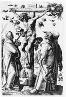

MÖ 30 civarında Nasıralı İsa’nın Yahudi dini kurumlarındaki kirlenmeye dair hissettiği şey, öfkeydi. Kudüs’teki tapınakta, tefeciler ve tüccarlar, en kutsal sayılması gereken yerde dükkanlarını açmışlardı. Hamursuz Bayramı sırasında takipçilerini tapınağa götüren İsa, bariz bir rahatsızlığa sebep olacak şekilde masaları ters yüz etti.

Cevaben, Yahudi yüksek mahkemesi Sanhedrin’in yüksek yargıcı Yusuf Caiaphas, dine küfretme suçundan İsa’yı tutuklattı. Caiaphas’ın İsa’yı yakalayabildiğine, çünkü İsa’nın havarilerinden biri olan Yahuda İşkariot’un ihanet ettiğine ve bu yüzden kolaylıkla tanındığına inanılır. İsa, işbirliği yapmayı reddettiğinde, Sanhedrin, Roma Valisi Pontius Pilate’ye onu teslim etti.
Bu noktada Pontius Pilate, Mesih İsa’yı çarmıha gerilerek idama mahkûm etti. Bu kadar sert bir cezaya neyin neden olduğu, başlı başına muazzam bir tartışma konusudur. En geniş çapta kabul gören görüş, Pilate’nin bu kararı, ya İsa’nın siyasi bir isyanı kışkırtabileceğinden duyduğu korku yüzünden veya daha basiti, sırf zalimlikten bizzat kendisinin verdiği yönündedir.
Kararın gerçekte ne sebeple verilmiş olursa olsun, Pilate, İsa’yı “Yahudilerin Kralı” olarak damgalayarak idam emrini verdi. İsa, hapishane ile öldürüleceği alan olan Calvary arasındaki yol boyunca çarmıhını (muhtemelen 45 kilogramdan daha ağırdı) taşımaya zorlandı. İsa genellikle haçı taşırken tasvir edilmesine rağmen, muhtemelen dikey kalas idam alanındaki zeminde sabit şekilde yere çakılı olduğundan, sadece yatay parçayı taşımış olması daha akla yatkındır. Cavalry alanı, Kudüs’ün dışında bir yerlerde konumlanmıştı ve büyük ihtimalle Romalılar’ın kurbanlarını çabucak gömebildikleri bir mezarlıktı.
İsa çarmıha gerilirken, Aramatyalı Yusuf yaklaştı ve son yemeği sırasında İsa’nın içtiği kadehi kullanarak, İsa’nın damlayan kanının bir kısmını kadehe akıttı. Bu kadeh, Kutsal Kase olarak bilinir. İsa öldükten sonra Yusuf, İsa’nın vücudunu kaldırdı ve mezarına gömdü.
EK BİLGİLER:
1. İsa’nın çarmıha gerilmesinden sonraki yıllarda Pontius Pilate, aşırı zulmünden dolayı görevinden uzaklaştırıldı.
2. Katolik Kilisesi, 1965’teki II. Vatikan anlaşmasına kadar Yahudilerin İsa’nın katili olduğu inancını resmen kınamamıştır.
3. Roma İmparatorluğu sırasında binlerce insanın çarmıha gerildiği iddialarına rağmen, şimdiye kadar kazılarda sadece bir tane çarmıha gerilmiş beden bulundu. Çoğu kurban, çarmıhlarının üzerinde çürümeye terk edilmişti.